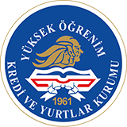

Ana Sayfa
Kuruluş
Misyon-Vizyon
Yönetim Kurulu
Öğrenci
YÖNETİM KURULU
REKTÖR Prof. Dr. Ekrem KALAN
REKTÖR YARDIMCISI Prof. Dr. Erdoğan ASLAN
REKTÖR YARDIMCISI Prof. Dr. Arife USLU GÖKCEOĞLU
REKTÖR YARDIMCISI Prof. Dr. Nilgün TATAR
ALANYA ALAADDİN KEYKUBAT ÜNİVERSİTESİ SENATO ÜYELERİ
Prof. Dr. Ekrem KALAN - REKTÖR
Prof. Dr. Erdoğan ASLAN - REKTÖR YARDIMCISI
Prof. Dr. Arife USLU GÖKCEOĞLU - REKTÖR YARDIMCISI
Prof. Dr. Nilgün TATAR - REKTÖR YARDIMCISI
Prof. Dr. Güneş YILMAZ - İKTİSADİ, İDARİ VE SOSYAL BİLİMLER FAKÜLTESİ DEKAN V.
Prof. Dr. Mehmet GÜMÜŞ - RAFET KAYIŞ MÜHENDİSLİK FAKÜLTESİ DEKAN V.
Prof. Dr. Arife USLU GÖKCEOĞLU - TIP FAKÜLTESİ DEKAN V.
Prof. Dr. Erdoğan ASLAN - DİŞ HEKİMLİĞİ FAKÜLTESİ DEKAN V.
Prof. Dr. Hayriye ÜNLÜ - SAĞLIK BİLİMLERİ FAKÜLTESİ DEKANI
Prof. Dr. Hamdi Alper GÜNGÖRMÜŞ - SPOR BİLİMLERİ FAKÜLTESİ DEKANI
Prof. Dr. Burçin Cevdet ÇETİNSÖZ - TURİZM FAKÜLTESİ DEKAN V.
Prof. Dr. Alaattin KANOĞLU - SANAT, TASARIM VE MİMARLIK FAKÜLTESİ DEKANI
Prof. Dr. Atılgan ATILGAN - GAZİPAŞA HAVACILIK VE UZAY BİLİMLERİ FAKÜLTESİ DEKAN V.
Doç. Dr. Derman VATANSEVER BAYRAMOL - LİSANSÜSTÜ EĞİTİM ENSTİTÜSÜ MÜDÜRÜ
Dr. Öğr. Üyesi Fidel ÇAKMAK - YABANCI DİLLER YÜKSEKOKULU MÜDÜRÜ
Dr. Öğr. Üyesi Emrah YÜKSEL - AKSEKİ MESLEK YÜKSEKOKULU MÜDÜRÜ V.
Dr. Öğr. Üyesi Eray BAYRAMOL - ALTSO MESLEK YÜKSEKOKULU MÜDÜRÜ
Doç. Dr. Yavuz UYSAL - GAZİPAŞA M.R.B. MYO MÜDÜRÜ V.
Dr. Öğr. Üyesi Arife ALBAYRAK COŞAR - SAĞLIK HİZMETLERİ MYO MÜDÜRÜ
Doç. Dr. Özgür GÖLGE - ALTSO TURİZM MYO MÜDÜRÜ.
Doç. Dr. Yakup AKGÜL - SENATÖR
Dr. Öğr. Üyesi Fatih DARICIK - SENATÖR
Doç. Dr. Ahmet ŞAHİN - SENATÖR
Doç. Dr. Seda AVNİOĞLU - SENATÖR.
Doç. Dr. Işık BAYRAKTAR - SENATÖR
Doç. Dr. Emirhan YENİŞEHİRLİOĞLU - SENATÖR
Prof. Dr. Gülsün YILDIRIM AYDIN - SENATÖR
Prof. Dr. Figen ALP YILMAZ - SENATÖR
Prof. Dr. Deniz Ayşe KANOĞLU - SENATÖR
Doç. Dr. Meltem AKÇA - SENATÖR
Alper ÖZYÜREK - RAPORTÖR

Kestel Mahallesi, Üniversite Caddesi, No:80 PK: 07425 Alanya/ ANTALYA/TÜRKİYE
+90 242 510 60 60
+90 242 510 60 09
alku@alanya.edu.tr